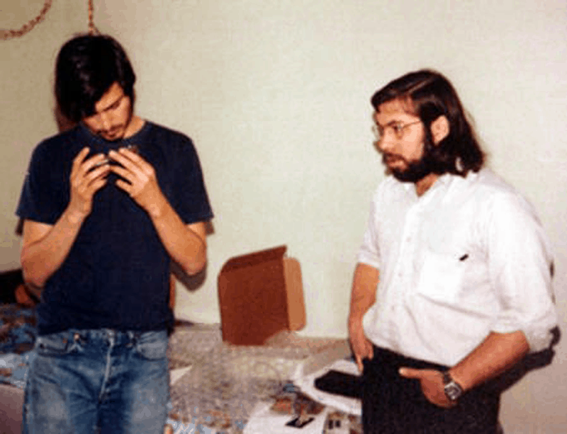
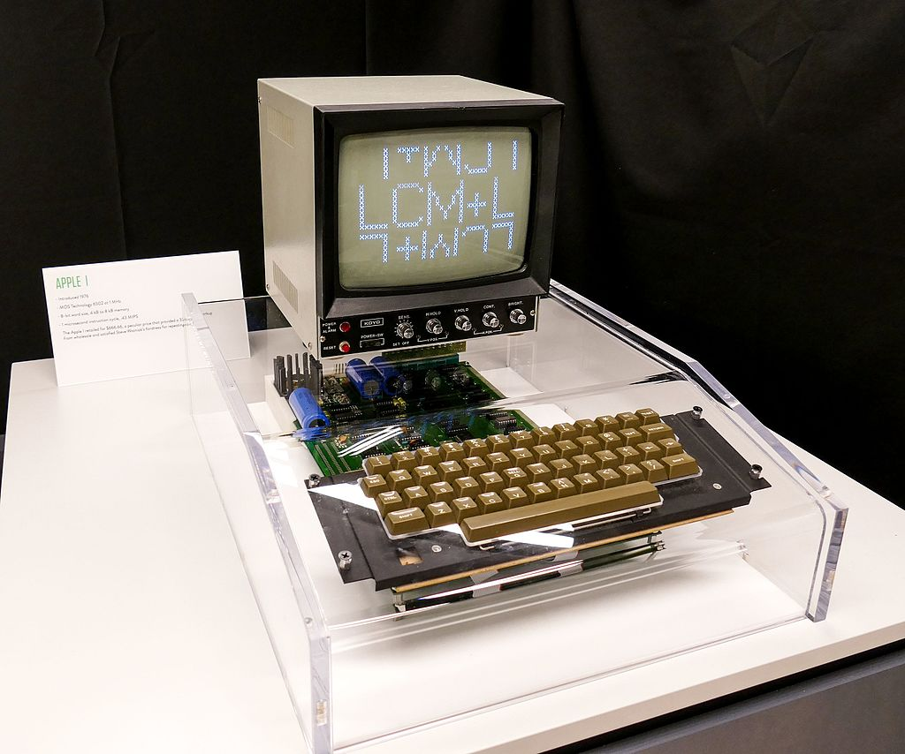
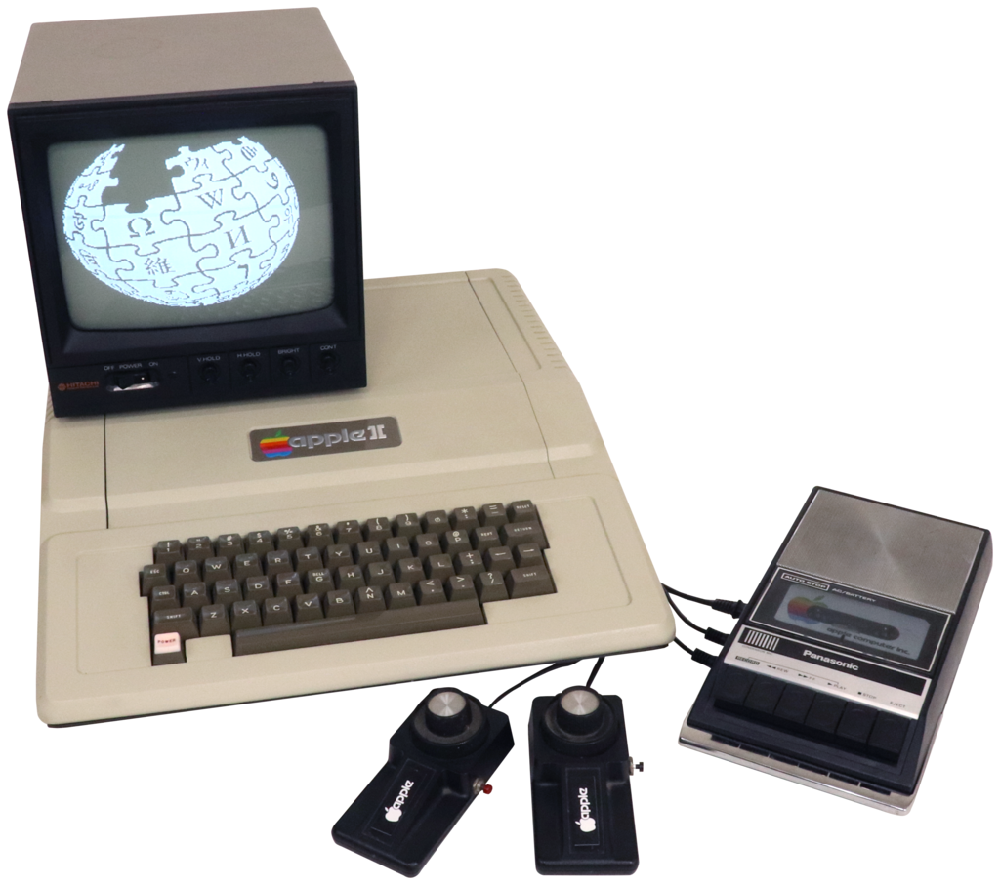

Steve Wozniak
(1950 - Present)

❝I just believe that the way that young people's minds develop is fascinating. If you are doing something for a grade or salary or a reward, it doesn't have as much meaning as creating something for yourself and your own life.❞ - Steve Wozniak
Contributions:
-
Steve Wozniak created
blue boxes these boxes enabled him and his friends to make long distances calls for free.
-
He developed the Apple I and co-developed the Apple II.
- He made personal computers more accessible and led the personal computer revolution.
-
Steve redesigned the Atari Breakout machine's circuit board with 50 less chips. This was a huge deal.
-
Steve founded CL 9 and created the first programmable universal remote.
-
Later on, he started teaching children in schools, up to grade 12.